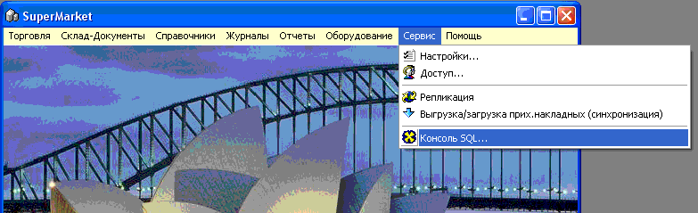
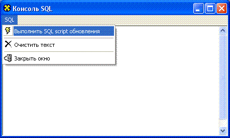
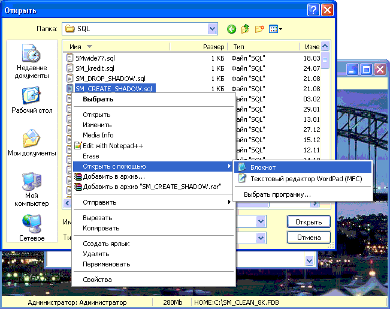
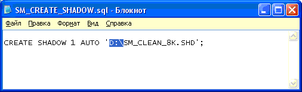
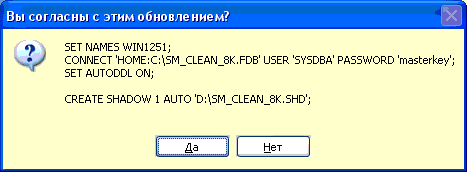

Как уже указывалось, в разделе справки "Системные
требования", всячески рекомендуется в конфигурации компьютера, на
котором размещается база данных, предусмотреть два жестких диска, при этом
размер таких дисков не имеет принципиального значения. Дело в том, что при
выходе из строя жесткого диска, высока вероятность того, что информацию с
него, в т.ч. базу данных, не удастся восстановить. Это не так страшно для
домашнего компьютера, но для магазина это означает, что придется заново
набирать базу данных, все наименования, снова делать переучет, вносить и
расценивать остатки и т.д., потери времени могут составить до двух
недель.
При наличии же в конфигурации компьютера-сервера
двух жестких дисков, СУБД Firebird® SQL Server позволяет создать так
называемую теневую (shadow) копию базы данных, которая в реальном времени
будет строится полностью идентичной основному файлу базы данных. Разместив
shadow на другом диске (именно физически другом, не на другом разделе того же,
где основная база), мы не теряя в дисковом быстродействии, выигрываем в
отказоустойчивости. При отказе основного диска понадобится совсем немного
времени, чтобы скопировать теневую копию на новый основной диск и восстановить
работу магазина.
Итак, подробнее о том, как сделать shadow базы
данных. После установки, регистрации и запуска программы, откройте
главное меню главной формы программы Сервис/Консоль SQL:


Выберите в меню консоли "Выполнить SQL script
обновления".
В появившемся окне войдите в только что
проинсталлированный каталог C:\SuperMarket\SQL\
найдите файл SM_CREATE_SHADOW.sql
щелкните на нем правой кнопкой мыши и выберите
меню "Открыть с помощью/Блокнот"

В открывшемся для редактирования файле, укажите
требуемый вам путь к диску и каталогу другого жесткого диска, где вы хотите
разместить теневую копию базы данных.

Закройте файл с сохранением изменений
и выбрав файл в списке скриптов нажмите "Открыть".

В появившемся диалоговом окне подтвердите
выполнение скрипта. В случае успешного выполнения в консоли появится
соответствующая запись.
При необходимости удалить теневую копию,
действуйте аналогично созданию, только используйте скрипт SM_DROP_SHADOW.sql,
при этом редактировать файл не нужно - он удаляется просто по номеру
копии.